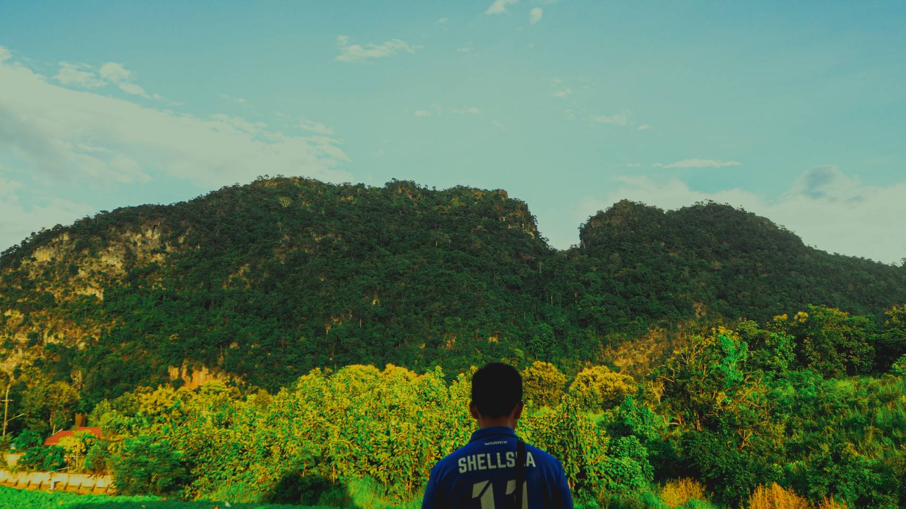
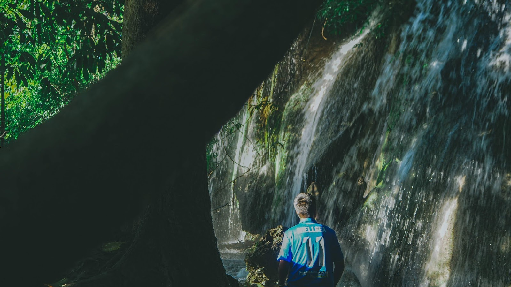
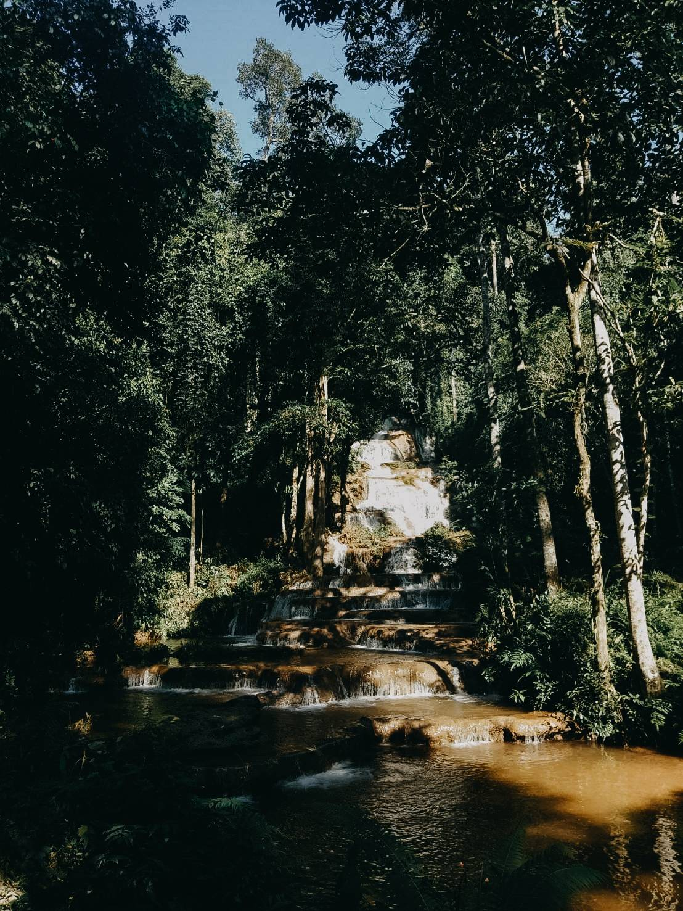

MaeSot Tak
14-18.10.2019
My girlfriend are from Tak province that cause of this trip has gone .I go to my girlfriend hometown by bus it took time to go 8 hours on bus. When we arrive it was early in the morning we continue to travel because we has already sleep in the bus we go to Maekasa waterfall and eat pork gill BBQ on top of the mountain on night
Next day we go travel around Maekasa and evening I still eat porkgill BBQ and we has set up and sleep in tent until morning it has a lot of beautiful fog then afternoon we go to Pha Charoen waterfall before we go back to Nonthaburi.



